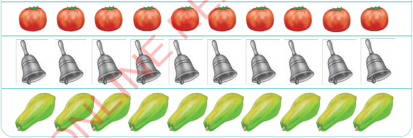
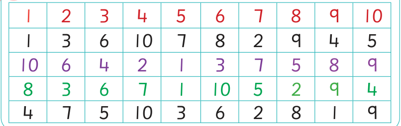

Sura ya Nane
Kutambua namba 10
Tuhesabu vitu hadi kumi
Tumeshajifunza namba kuanzia sifuri hadi tisa. Sasa tunajifunza namba kumi. Namba kumi itatusaidia kuandika idadi ya vitu vinavyozidi tisa.
Zoezi la 1
Chunguza, gusa au sikiliza maelezo, kisha hesabu idadi ya vitu vifuatavyo kwa sauti.

Zoezi la 2
Soma, onyesha au wasilisha namba zifuatazo kwa sauti.
